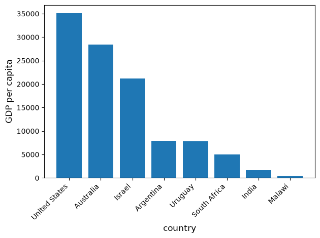
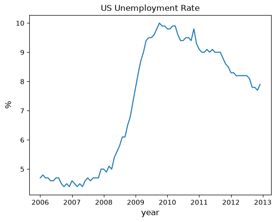
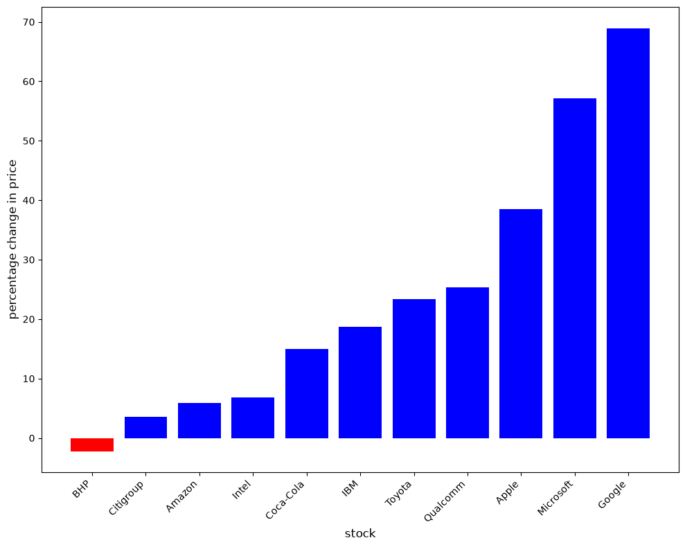
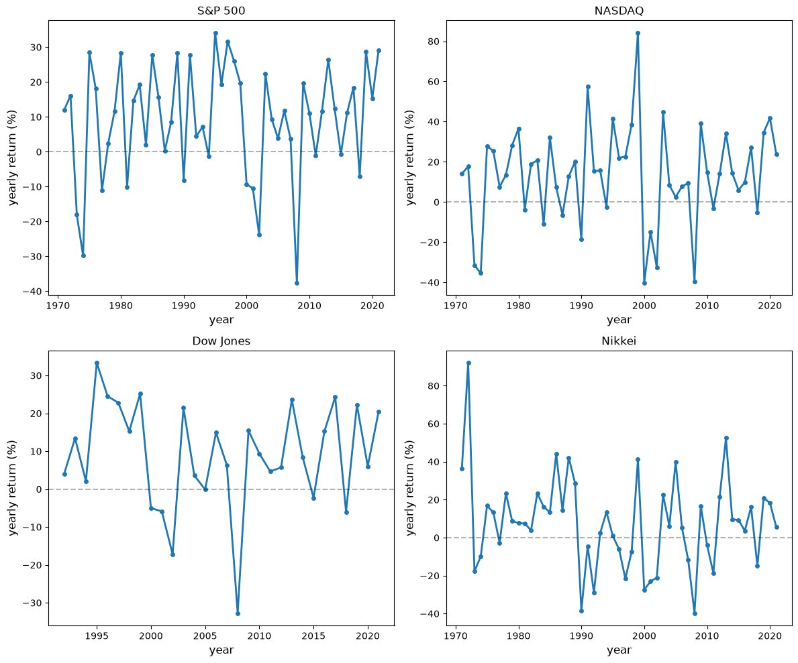

19. Polars#
علاوه بر آنچه در Anaconda موجود است، این درس به کتابخانههای زیر نیاز دارد:
!pip install --upgrade polars yfinance
19.1. مروری کلی#
Polars یک کتابخانه سریع دستکاری داده برای Python است که به زبان Rust نوشته شده است.
این کتابخانه به دلیل مزیتهای عملکردی خود به عنوان جایگزینی مدرن برای pandas محبوبیت قابلتوجهی کسب کرده است.
Polars با در نظر گرفتن عملکرد و کارایی حافظه طراحی شده و از موارد زیر بهره میبرد:
قالب ستونی Apache Arrow برای دسترسی سریع به داده
ارزیابی تنبل برای بهینهسازی اجرای پرسوجو
پردازش موازی برای استفاده از تمام هستههای پردازنده در دسترس
یک رابط برنامهنویسی گویا که حول عبارات ستونی ساخته شده است
Tip
چرا Polars را بهجای pandas در نظر بگیریم؟
حافظه: pandas معمولاً به ۵ تا ۱۰ برابر حجم مجموعه داده شما نیاز به RAM دارد؛ Polars تنها به ۲ تا ۴ برابر نیاز دارد
سرعت: Polars برای بسیاری از عملیات رایج ۱۰ تا ۱۰۰ برابر سریعتر است
مشاهده کنید: معیارهای TPC-H در Polars برای مقایسههای عملکردی بهروز
در طول این درس، فرض میکنیم که واردسازیهای زیر انجام شده است
import polars as pl
import numpy as np
import matplotlib.pyplot as plt
مانند Pandas، Polars دو نوع داده مهم تعریف میکند: Series و DataFrame.
میتوانید Series را به عنوان یک ستون داده در نظر بگیرید، مانند مجموعهای از مشاهدات یک متغیر واحد.
DataFrame یک شیء دوبعدی برای ذخیره ستونهای مرتبط داده است.
19.2. Series#
بیایید با Series شروع کنیم.
ابتدا سریای از چهار مشاهده تصادفی میسازیم
rng = np.random.default_rng()
s = pl.Series(name='daily returns', values=rng.standard_normal(4))
s
| daily returns |
|---|
| f64 |
| -1.289138 |
| 0.685724 |
| -0.094137 |
| -0.033635 |
Note
برخلاف Series در pandas، Series در Polars هیچ نمایه ردیفی ندارند. Polars ستونمحور است — دسترسی به داده از طریق عبارات ستونی و ماسکهای بولی مدیریت میشود، نه برچسبهای ردیف. برای جزئیات بیشتر راهنمای مهاجرت Polars برای کاربران pandas را ببینید.
Series در Polars بر پایه آرایههای Apache Arrow ساخته شدهاند و از بسیاری از عملیات آشنا پشتیبانی میکنند
s * 100
| daily returns |
|---|
| f64 |
| -128.913793 |
| 68.572418 |
| -9.413743 |
| -3.363491 |
مقادیر مطلق به عنوان یک متد در دسترس هستند
s.abs()
| daily returns |
|---|
| f64 |
| 1.289138 |
| 0.685724 |
| 0.094137 |
| 0.033635 |
همچنین میتوانیم آمار خلاصه سریع دریافت کنیم
s.describe()
| statistic | value |
|---|---|
| str | f64 |
| "count" | 4.0 |
| "null_count" | 0.0 |
| "mean" | -0.182797 |
| "std" | 0.818215 |
| "min" | -1.289138 |
| "25%" | -0.094137 |
| "50%" | -0.033635 |
| "75%" | -0.033635 |
| "max" | 0.685724 |
از آنجا که Polars هیچ نمایه ردیفی ندارد، دادههای برچسبدار به DataFrame نیاز دارند.
برای مثال، برای مرتبط کردن نمادهای معاملاتی با بازدهها:
df = pl.DataFrame({
'company': ['AMZN', 'AAPL', 'MSFT', 'GOOG'],
'daily returns': rng.standard_normal(4)
})
df
| company | daily returns |
|---|---|
| str | f64 |
| "AMZN" | -0.065946 |
| "AAPL" | 0.134938 |
| "MSFT" | 0.397659 |
| "GOOG" | 0.452777 |
با فیلتر کردن بر روی یک عبارت ستونی به یک مقدار دسترسی پیدا میکنیم
df.filter(
pl.col('company') == 'AMZN'
).select('daily returns').item()
-0.06594567865634897
بهروزرسانیها نیز از عبارات بهجای تخصیص نمایه استفاده میکنند
df = df.with_columns(
pl.when(pl.col('company') == 'AMZN')
.then(0)
.otherwise(pl.col('daily returns'))
.alias('daily returns')
)
df
| company | daily returns |
|---|---|
| str | f64 |
| "AMZN" | 0.0 |
| "AAPL" | 0.134938 |
| "MSFT" | 0.397659 |
| "GOOG" | 0.452777 |
میتوانیم عضویت را نیز بررسی کنیم
'AAPL' in df['company']
True
19.3. DataFrameها#
در حالی که Series یک ستون منفرد از داده است، DataFrame چندین ستون است، یکی برای هر متغیر.
مانند Pandas، بیایید با دادههای Penn World Tables کار کنیم.
این را با pl.read_csv میخوانیم
url = 'https://github.com/QuantEcon/data-lectures/raw/main/lectures/test_pwt.csv'
df = pl.read_csv(url)
df
| country | country isocode | year | POP | XRAT | tcgdp | cc | cg |
|---|---|---|---|---|---|---|---|
| str | str | i64 | f64 | f64 | f64 | f64 | f64 |
| "Argentina" | "ARG" | 2000 | 37335.653 | 0.9995 | 295072.21869 | 75.716805 | 5.578804 |
| "Australia" | "AUS" | 2000 | 19053.186 | 1.72483 | 541804.6521 | 67.759026 | 6.720098 |
| "India" | "IND" | 2000 | 1.0063e6 | 44.9416 | 1.7281e6 | 64.575551 | 14.072206 |
| "Israel" | "ISR" | 2000 | 6114.57 | 4.07733 | 129253.89423 | 64.436451 | 10.266688 |
| "Malawi" | "MWI" | 2000 | 11801.505 | 59.543808 | 5026.221784 | 74.707624 | 11.658954 |
| "South Africa" | "ZAF" | 2000 | 45064.098 | 6.93983 | 227242.36949 | 72.71871 | 5.726546 |
| "United States" | "USA" | 2000 | 282171.957 | 1.0 | 9.8987e6 | 72.347054 | 6.032454 |
| "Uruguay" | "URY" | 2000 | 3219.793 | 12.099592 | 25255.961693 | 78.97874 | 5.108068 |
19.3.1. انتخاب داده#
میتوانیم ردیفها را با برشدهی و ستونها را با نام انتخاب کنیم
df[2:5]
| country | country isocode | year | POP | XRAT | tcgdp | cc | cg |
|---|---|---|---|---|---|---|---|
| str | str | i64 | f64 | f64 | f64 | f64 | f64 |
| "India" | "IND" | 2000 | 1.0063e6 | 44.9416 | 1.7281e6 | 64.575551 | 14.072206 |
| "Israel" | "ISR" | 2000 | 6114.57 | 4.07733 | 129253.89423 | 64.436451 | 10.266688 |
| "Malawi" | "MWI" | 2000 | 11801.505 | 59.543808 | 5026.221784 | 74.707624 | 11.658954 |
برای انتخاب ستونهای خاص، فهرستی از نامها را به select بدهید
df.select(['country', 'tcgdp'])
| country | tcgdp |
|---|---|
| str | f64 |
| "Argentina" | 295072.21869 |
| "Australia" | 541804.6521 |
| "India" | 1.7281e6 |
| "Israel" | 129253.89423 |
| "Malawi" | 5026.221784 |
| "South Africa" | 227242.36949 |
| "United States" | 9.8987e6 |
| "Uruguay" | 25255.961693 |
اینها میتوانند ترکیب شوند
df[2:5].select(['country', 'tcgdp'])
| country | tcgdp |
|---|---|
| str | f64 |
| "India" | 1.7281e6 |
| "Israel" | 129253.89423 |
| "Malawi" | 5026.221784 |
19.3.2. فیلتر کردن بر اساس شرایط#
متد filter عبارات بولی ساختهشده از pl.col را میپذیرد
df.filter(pl.col('POP') >= 20000)
| country | country isocode | year | POP | XRAT | tcgdp | cc | cg |
|---|---|---|---|---|---|---|---|
| str | str | i64 | f64 | f64 | f64 | f64 | f64 |
| "Argentina" | "ARG" | 2000 | 37335.653 | 0.9995 | 295072.21869 | 75.716805 | 5.578804 |
| "India" | "IND" | 2000 | 1.0063e6 | 44.9416 | 1.7281e6 | 64.575551 | 14.072206 |
| "South Africa" | "ZAF" | 2000 | 45064.098 | 6.93983 | 227242.36949 | 72.71871 | 5.726546 |
| "United States" | "USA" | 2000 | 282171.957 | 1.0 | 9.8987e6 | 72.347054 | 6.032454 |
چندین شرط میتوانند با & (و) و | (یا) ترکیب شوند
df.filter(
(pl.col('country').is_in(['Argentina', 'India', 'South Africa'])) &
(pl.col('POP') > 40000)
)
| country | country isocode | year | POP | XRAT | tcgdp | cc | cg |
|---|---|---|---|---|---|---|---|
| str | str | i64 | f64 | f64 | f64 | f64 | f64 |
| "India" | "IND" | 2000 | 1.0063e6 | 44.9416 | 1.7281e6 | 64.575551 | 14.072206 |
| "South Africa" | "ZAF" | 2000 | 45064.098 | 6.93983 | 227242.36949 | 72.71871 | 5.726546 |
عبارات میتوانند شامل عملیات حسابی بین ستونها باشند
df.filter(
(pl.col('cc') + pl.col('cg') >= 80) & (pl.col('POP') <= 20000)
)
| country | country isocode | year | POP | XRAT | tcgdp | cc | cg |
|---|---|---|---|---|---|---|---|
| str | str | i64 | f64 | f64 | f64 | f64 | f64 |
| "Malawi" | "MWI" | 2000 | 11801.505 | 59.543808 | 5026.221784 | 74.707624 | 11.658954 |
| "Uruguay" | "URY" | 2000 | 3219.793 | 12.099592 | 25255.961693 | 78.97874 | 5.108068 |
کشوری با بزرگترین سهم مصرف خانوار را انتخاب کنید
df.filter(pl.col('cc') == pl.col('cc').max())
| country | country isocode | year | POP | XRAT | tcgdp | cc | cg |
|---|---|---|---|---|---|---|---|
| str | str | i64 | f64 | f64 | f64 | f64 | f64 |
| "Uruguay" | "URY" | 2000 | 3219.793 | 12.099592 | 25255.961693 | 78.97874 | 5.108068 |
19.3.3. عبارات ستونی#
یک تفاوت کلیدی با pandas این است که Polars از عبارات ستونی برای تبدیلها استفاده میکند، نه فراخوانیهای عنصر به عنصر apply.
در اینجا مثالی برای محاسبه بیشینه هر ستون عددی آورده شده است
df.select(
pl.col(['year', 'POP', 'XRAT', 'tcgdp', 'cc', 'cg'])
.max()
.name.suffix('_max')
)
| year_max | POP_max | XRAT_max | tcgdp_max | cc_max | cg_max |
|---|---|---|---|---|---|
| i64 | f64 | f64 | f64 | f64 | f64 |
| 2000 | 1.0063e6 | 59.543808 | 9.8987e6 | 78.97874 | 14.072206 |
عبارات میتوانند در داخل with_columns برای افزودن یا تغییر ستونها استفاده شوند
df.with_columns(
(pl.col('XRAT') / 10).alias('XRAT_scaled'),
pl.col(pl.Float64).round(2)
)
| country | country isocode | year | POP | XRAT | tcgdp | cc | cg | XRAT_scaled |
|---|---|---|---|---|---|---|---|---|
| str | str | i64 | f64 | f64 | f64 | f64 | f64 | f64 |
| "Argentina" | "ARG" | 2000 | 37335.65 | 1.0 | 295072.22 | 75.72 | 5.58 | 0.09995 |
| "Australia" | "AUS" | 2000 | 19053.19 | 1.72 | 541804.65 | 67.76 | 6.72 | 0.172483 |
| "India" | "IND" | 2000 | 1006300.3 | 44.94 | 1.7281e6 | 64.58 | 14.07 | 4.49416 |
| "Israel" | "ISR" | 2000 | 6114.57 | 4.08 | 129253.89 | 64.44 | 10.27 | 0.407733 |
| "Malawi" | "MWI" | 2000 | 11801.5 | 59.54 | 5026.22 | 74.71 | 11.66 | 5.954381 |
| "South Africa" | "ZAF" | 2000 | 45064.1 | 6.94 | 227242.37 | 72.72 | 5.73 | 0.693983 |
| "United States" | "USA" | 2000 | 282171.96 | 1.0 | 9.8987e6 | 72.35 | 6.03 | 0.1 |
| "Uruguay" | "URY" | 2000 | 3219.79 | 12.1 | 25255.96 | 78.98 | 5.11 | 1.209959 |
منطق شرطی از pl.when(...).then(...).otherwise(...) استفاده میکند
df.with_columns(
pl.when(pl.col('POP') >= 20000)
.then(pl.col('POP'))
.otherwise(None)
.alias('POP_filtered')
).select(['country', 'POP', 'POP_filtered'])
| country | POP | POP_filtered |
|---|---|---|
| str | f64 | f64 |
| "Argentina" | 37335.653 | 37335.653 |
| "Australia" | 19053.186 | null |
| "India" | 1.0063e6 | 1.0063e6 |
| "Israel" | 6114.57 | null |
| "Malawi" | 11801.505 | null |
| "South Africa" | 45064.098 | 45064.098 |
| "United States" | 282171.957 | 282171.957 |
| "Uruguay" | 3219.793 | null |
Note
Polars map_elements را به عنوان راه فراری برای اعمال توابع دلخواه
Python بهصورت ردیفبهردیف ارائه میدهد، اما این کار موتور بهینهشده عبارات
را دور میزند و در صورت وجود عبارت بومی باید از آن اجتناب شود.
19.3.4. مقادیر گمشده#
بیایید برخی مقادیر تهی را برای نمایش تکنیکهای جایگذاری وارد کنیم
df_nulls = df.with_row_index().with_columns(
pl.when(pl.col('index') == 0)
.then(None).otherwise(pl.col('XRAT')).alias('XRAT'),
pl.when(pl.col('index') == 3)
.then(None).otherwise(pl.col('cc')).alias('cc'),
pl.when(pl.col('index') == 5)
.then(None).otherwise(pl.col('tcgdp')).alias('tcgdp'),
pl.when(pl.col('index') == 6)
.then(None).otherwise(pl.col('POP')).alias('POP'),
).drop('index')
df_nulls
| country | country isocode | year | POP | XRAT | tcgdp | cc | cg |
|---|---|---|---|---|---|---|---|
| str | str | i64 | f64 | f64 | f64 | f64 | f64 |
| "Argentina" | "ARG" | 2000 | 37335.653 | null | 295072.21869 | 75.716805 | 5.578804 |
| "Australia" | "AUS" | 2000 | 19053.186 | 1.72483 | 541804.6521 | 67.759026 | 6.720098 |
| "India" | "IND" | 2000 | 1.0063e6 | 44.9416 | 1.7281e6 | 64.575551 | 14.072206 |
| "Israel" | "ISR" | 2000 | 6114.57 | 4.07733 | 129253.89423 | null | 10.266688 |
| "Malawi" | "MWI" | 2000 | 11801.505 | 59.543808 | 5026.221784 | 74.707624 | 11.658954 |
| "South Africa" | "ZAF" | 2000 | 45064.098 | 6.93983 | null | 72.71871 | 5.726546 |
| "United States" | "USA" | 2000 | null | 1.0 | 9.8987e6 | 72.347054 | 6.032454 |
| "Uruguay" | "URY" | 2000 | 3219.793 | 12.099592 | 25255.961693 | 78.97874 | 5.108068 |
تمام مقادیر تهی را با صفر پر کنید
df_nulls.fill_null(0)
| country | country isocode | year | POP | XRAT | tcgdp | cc | cg |
|---|---|---|---|---|---|---|---|
| str | str | i64 | f64 | f64 | f64 | f64 | f64 |
| "Argentina" | "ARG" | 2000 | 37335.653 | 0.0 | 295072.21869 | 75.716805 | 5.578804 |
| "Australia" | "AUS" | 2000 | 19053.186 | 1.72483 | 541804.6521 | 67.759026 | 6.720098 |
| "India" | "IND" | 2000 | 1.0063e6 | 44.9416 | 1.7281e6 | 64.575551 | 14.072206 |
| "Israel" | "ISR" | 2000 | 6114.57 | 4.07733 | 129253.89423 | 0.0 | 10.266688 |
| "Malawi" | "MWI" | 2000 | 11801.505 | 59.543808 | 5026.221784 | 74.707624 | 11.658954 |
| "South Africa" | "ZAF" | 2000 | 45064.098 | 6.93983 | 0.0 | 72.71871 | 5.726546 |
| "United States" | "USA" | 2000 | 0.0 | 1.0 | 9.8987e6 | 72.347054 | 6.032454 |
| "Uruguay" | "URY" | 2000 | 3219.793 | 12.099592 | 25255.961693 | 78.97874 | 5.108068 |
یا با میانگینهای ستونی پر کنید
cols = ['cc', 'tcgdp', 'POP', 'XRAT']
df_nulls.with_columns(
pl.col(cols).fill_null(pl.col(cols).mean())
)
| country | country isocode | year | POP | XRAT | tcgdp | cc | cg |
|---|---|---|---|---|---|---|---|
| str | str | i64 | f64 | f64 | f64 | f64 | f64 |
| "Argentina" | "ARG" | 2000 | 37335.653 | 18.618141 | 295072.21869 | 75.716805 | 5.578804 |
| "Australia" | "AUS" | 2000 | 19053.186 | 1.72483 | 541804.6521 | 67.759026 | 6.720098 |
| "India" | "IND" | 2000 | 1.0063e6 | 44.9416 | 1.7281e6 | 64.575551 | 14.072206 |
| "Israel" | "ISR" | 2000 | 6114.57 | 4.07733 | 129253.89423 | 72.400502 | 10.266688 |
| "Malawi" | "MWI" | 2000 | 11801.505 | 59.543808 | 5026.221784 | 74.707624 | 11.658954 |
| "South Africa" | "ZAF" | 2000 | 45064.098 | 6.93983 | 1.8033e6 | 72.71871 | 5.726546 |
| "United States" | "USA" | 2000 | 161269.871714 | 1.0 | 9.8987e6 | 72.347054 | 6.032454 |
| "Uruguay" | "URY" | 2000 | 3219.793 | 12.099592 | 25255.961693 | 78.97874 | 5.108068 |
Polars همچنین از پر کردن رو به جلو (fill_null(strategy='forward')) و درونیابی پشتیبانی میکند.
ابزارهای جایگذاری پیشرفتهتری در scikit-learn در دسترس هستند.
19.3.5. تجسمسازی#
بیایید یک ستون تولید ناخالص داخلی سرانه بسازیم و آن را رسم کنیم
df = (df
.select(['country', 'POP', 'tcgdp'])
.rename({'POP': 'population', 'tcgdp': 'total GDP'})
.with_columns(
(pl.col('population') * 1e3).alias('population')
)
.with_columns(
(pl.col('total GDP') * 1e6 / pl.col('population'))
.alias('GDP percap')
)
.sort('GDP percap', descending=True)
)
df
| country | population | total GDP | GDP percap |
|---|---|---|---|
| str | f64 | f64 | f64 |
| "United States" | 2.82171957e8 | 9.8987e6 | 35080.381854 |
| "Australia" | 1.9053186e7 | 541804.6521 | 28436.433261 |
| "Israel" | 6.11457e6 | 129253.89423 | 21138.672749 |
| "Argentina" | 3.7335653e7 | 295072.21869 | 7903.229085 |
| "Uruguay" | 3.219793e6 | 25255.961693 | 7843.97062 |
| "South Africa" | 4.5064098e7 | 227242.36949 | 5042.647686 |
| "India" | 1.0063e9 | 1.7281e6 | 1717.324719 |
| "Malawi" | 1.1801505e7 | 5026.221784 | 425.896679 |
میتوانیم ستونها را مستقیماً برای matplotlib استخراج کنیم
Note
Polars همچنین یک رابط برنامهنویسی رسم داخلی
مبتنی بر Altair ارائه میدهد (به عنوان مثال، df.plot.bar(x=..., y=...)).
ما در اینجا از matplotlib برای هماهنگی با بقیه سری درسها استفاده میکنیم.
fig, ax = plt.subplots()
ax.bar(df['country'].to_list(), df['GDP percap'].to_list())
ax.set_xlabel('country', fontsize=12)
ax.set_ylabel('GDP per capita', fontsize=12)
plt.xticks(rotation=45, ha='right')
plt.tight_layout()
plt.show()

19.4. ارزیابی تنبل#
یکی از قدرتمندترین ویژگیهای Polars ارزیابی تنبل است.
بهجای اجرای فوری هر عملیات، حالت تنبل کل برنامه پرسوجو را جمعآوری کرده و پیش از اجرا آن را بهینه میکند.
19.4.1. مشتاق در برابر تنبل#
# Reload the dataset
url = 'https://github.com/QuantEcon/data-lectures/raw/main/lectures/test_pwt.csv'
df_full = pl.read_csv(url)
رابط برنامهنویسی مشتاق (eager) بلافاصله اجرا میشود (مانند pandas)
result_eager = (df_full
.filter(pl.col('tcgdp') > 1000)
.select(['country', 'year', 'tcgdp'])
.sort('tcgdp', descending=True)
)
result_eager.head()
| country | year | tcgdp |
|---|---|---|
| str | i64 | f64 |
| "United States" | 2000 | 9.8987e6 |
| "India" | 2000 | 1.7281e6 |
| "Australia" | 2000 | 541804.6521 |
| "Argentina" | 2000 | 295072.21869 |
| "South Africa" | 2000 | 227242.36949 |
رابط برنامهنویسی تنبل (lazy) در عوض یک برنامه پرسوجو میسازد
lazy_query = (df_full.lazy()
.filter(pl.col('tcgdp') > 1000)
.select(['country', 'year', 'tcgdp'])
.sort('tcgdp', descending=True)
)
print(lazy_query.explain())
SORT BY [descending: [true]] [col("tcgdp")]
FILTER col("tcgdp") > 1000.0
FROM
DF ["country", "country isocode", "year", "POP", ...]; PROJECT["country", "year", "tcgdp"] 3/8 COLUMNS
برای اجرای برنامه، collect را فراخوانی کنید
result_lazy = lazy_query.collect()
result_lazy.head()
| country | year | tcgdp |
|---|---|---|
| str | i64 | f64 |
| "United States" | 2000 | 9.8987e6 |
| "India" | 2000 | 1.7281e6 |
| "Australia" | 2000 | 541804.6521 |
| "Argentina" | 2000 | 295072.21869 |
| "South Africa" | 2000 | 227242.36949 |
19.4.2. بهینهسازی پرسوجو#
موتور تنبل بهطور خودکار چندین بهینهسازی را اعمال میکند:
فشار محمول (predicate pushdown) — فیلترها در اسرع وقت اعمال میشوند
فشار تصویر (projection pushdown) — فقط ستونهای مورد نیاز از منبع خوانده میشوند
حذف زیرعبارت مشترک — محاسبات تکراری ادغام میشوند
بیایید ببینیم Polars چگونه یک پرسوجوی چندمرحلهای را بازنویسی میکند
optimized = (df_full.lazy()
.select(['country', 'year', 'tcgdp', 'POP'])
.filter(pl.col('tcgdp') > 500)
.with_columns(
(pl.col('tcgdp') / pl.col('POP')).alias('gdp_per_capita')
)
.filter(pl.col('gdp_per_capita') > 10)
.select(['country', 'year', 'gdp_per_capita'])
)
print("Optimized plan:")
print(optimized.explain())
Optimized plan:
FILTER col("gdp_per_capita") > 10.0
FROM
simple π 3/3 ["country", "year", ... 1 other column]
WITH_COLUMNS:
[(col("tcgdp") / col("POP")).alias("gdp_per_capita")]
FILTER col("tcgdp") > 500.0
FROM
DF ["country", "country isocode", "year", "POP", ...]; PROJECT["country", "year", "tcgdp", "POP"] 4/8 COLUMNS
اجرای برنامه نتیجه نهایی را به ما میدهد
optimized.collect()
| country | year | gdp_per_capita |
|---|---|---|
| str | i64 | f64 |
| "Australia" | 2000 | 28.436433 |
| "Israel" | 2000 | 21.138673 |
| "United States" | 2000 | 35.080382 |
19.4.3. مقایسه عملکرد#
بیایید pandas، Polars مشتاق، و Polars تنبل را روی همان کار مقایسه کنیم.
ابتدا با یک مجموعه داده کوچک (همان Penn World Tables که در بالا استفاده کردیم) شروع میکنیم تا نشان دهیم که برای دادههای کوچک تفاوتها ناچیز هستند
import pandas as pd
import time
# Small dataset -- Penn World Tables (~8 rows)
url = 'https://github.com/QuantEcon/data-lectures/raw/main/lectures/test_pwt.csv'
small_pd = pd.read_csv(url)
small_pl = pl.read_csv(url)
اکنون همان عملیات فیلتر-انتخاب-مرتبسازی را در هر کتابخانه زمانبندی میکنیم
# pandas
start = time.perf_counter()
_ = (small_pd
.query('tcgdp > 500')
[['country', 'year', 'tcgdp', 'POP']]
.assign(gdp_pc=lambda d: d['tcgdp'] / d['POP'])
.sort_values('gdp_pc', ascending=False))
pd_small = time.perf_counter() - start
# Polars eager
start = time.perf_counter()
_ = (small_pl
.filter(pl.col('tcgdp') > 500)
.select(['country', 'year', 'tcgdp', 'POP'])
.with_columns((pl.col('tcgdp') / pl.col('POP')).alias('gdp_pc'))
.sort('gdp_pc', descending=True))
pl_small = time.perf_counter() - start
print(f"Small data -- pandas: {pd_small:.4f}s | Polars eager: {pl_small:.4f}s")
Small data -- pandas: 0.0054s | Polars eager: 0.0010s
روی تعداد اندکی ردیف، تفاوت سرعت ناچیز است — از هر رابط برنامهنویسی که راحتتر مییابید استفاده کنید.
اکنون بیایید مقیاس را به ۵ میلیون ردیف بزرگ کنیم که تفاوت واضح میشود.
کار این است: فیلتر کردن ردیفهایی که value > 0، محاسبه یک حاصلضرب وزنی
value * weight، سپس گرفتن میانگین آن حاصلضرب در هر گروه —
یک میانگین وزنی گروهبندیشده.
n = 5_000_000
rng = np.random.default_rng(42)
groups = rng.choice(['A', 'B', 'C', 'D'], n)
values = rng.standard_normal(n)
weights = rng.random(n)
extra1 = rng.standard_normal(n)
extra2 = rng.standard_normal(n)
big_pd = pd.DataFrame({
'group': groups, 'value': values,
'weight': weights, 'extra1': extra1, 'extra2': extra2
})
big_pl = pl.DataFrame({
'group': groups, 'value': values,
'weight': weights, 'extra1': extra1, 'extra2': extra2
})
ابتدا، خط پایه pandas
start = time.perf_counter()
tmp = big_pd[big_pd['value'] > 0][['group', 'value', 'weight']].copy()
tmp['weighted'] = tmp['value'] * tmp['weight']
_ = tmp.groupby('group')['weighted'].mean()
pd_time = time.perf_counter() - start
print(f"pandas: {pd_time:.4f}s")
pandas: 0.1308s
سپس، Polars در حالت مشتاق
start = time.perf_counter()
_ = (big_pl
.filter(pl.col('value') > 0)
.select(['group', 'value', 'weight'])
.with_columns(
(pl.col('value') * pl.col('weight')).alias('weighted'))
.group_by('group')
.agg(pl.col('weighted').mean()))
eager_time = time.perf_counter() - start
print(f"Polars eager: {eager_time:.4f}s")
Polars eager: 0.0373s
و در نهایت، Polars در حالت تنبل
start = time.perf_counter()
_ = (big_pl.lazy()
.filter(pl.col('value') > 0)
.select(['group', 'value', 'weight'])
.with_columns(
(pl.col('value') * pl.col('weight')).alias('weighted'))
.group_by('group')
.agg(pl.col('weighted').mean())
.collect())
lazy_time = time.perf_counter() - start
print(f"Polars lazy: {lazy_time:.4f}s")
Polars lazy: 0.0330s
نکته کلیدی:
برای دادههای کوچک (هزاران ردیف)، pandas و Polars بهطور مشابهی عمل میکنند — بر اساس ترجیح رابط برنامهنویسی و تناسب اکوسیستم انتخاب کنید.
برای دادههای متوسط تا بزرگ (صدها هزار ردیف و بیشتر)، Polars میتواند بهطور قابلتوجهی سریعتر باشد به لطف موتور Rust، اجرای موازی، و (در حالت تنبل) بهینهسازی پرسوجو.
رابط برنامهنویسی تنبل هنگام خواندن از دیسک بهویژه قدرتمند است — scan_csv مستقیماً یک LazyFrame برمیگرداند، بنابراین فیلترها و تصویرها به خواننده فایل فشار داده میشوند.
Tip
از pl.scan_csv(path) بهجای pl.read_csv(path) هنگام کار با
فایلهای CSV بزرگ استفاده کنید.
فقط ستونها و ردیفهایی که واقعاً به آنها نیاز دارید از دیسک خوانده میشوند.
مستندات ورودی/خروجی Polars را ببینید.
19.5. منابع داده آنلاین#
مانند Pandas، Python پرسوجوی پایگاههای داده آنلاین را ساده میکند.
یک پایگاه داده مهم برای اقتصاددانان FRED است — مجموعهای گسترده از دادههای سری زمانی که توسط فدرال رزرو سنتلوئیس نگهداری میشود.
متد read_csv در Polars میتواند داده را مستقیماً از یک URL دریافت کند.
از try_parse_dates=True برای تجزیه خودکار ستون تاریخ استفاده میکنیم
fred_url = ('https://fred.stlouisfed.org/graph/fredgraph.csv?'
'bgcolor=%23e1e9f0&chart_type=line&drp=0&'
'fo=open%20sans&graph_bgcolor=%23ffffff&'
'height=450&mode=fred&recession_bars=on&'
'txtcolor=%23444444&ts=12&tts=12&width=1318&'
'nt=0&thu=0&trc=0&show_legend=yes&'
'show_axis_titles=yes&show_tooltip=yes&'
'id=UNRATE&scale=left&cosd=1948-01-01&'
'coed=2024-06-01&line_color=%234572a7&'
'link_values=false&line_style=solid&'
'mark_type=none&mw=3&lw=2&ost=-99999&'
'oet=99999&mma=0&fml=a&fq=Monthly&fam=avg&'
'fgst=lin&fgsnd=2020-02-01&line_index=1&'
'transformation=lin&vintage_date=2024-07-29&'
'revision_date=2024-07-29&nd=1948-01-01')
data = pl.read_csv(fred_url, try_parse_dates=True)
بیایید چند ردیف اول را بررسی کنیم
data.head()
| observation_date | UNRATE |
|---|---|
| date | f64 |
| 1948-01-01 | 3.4 |
| 1948-02-01 | 3.8 |
| 1948-03-01 | 4.0 |
| 1948-04-01 | 3.9 |
| 1948-05-01 | 3.5 |
و آمار خلاصه را دریافت کنیم
data.describe()
| statistic | observation_date | UNRATE |
|---|---|---|
| str | str | f64 |
| "count" | "918" | 918.0 |
| "null_count" | "0" | 0.0 |
| "mean" | "1986-03-17 06:30:35.294117" | 5.693246 |
| "std" | null | 1.710248 |
| "min" | "1948-01-01" | 2.5 |
| "25%" | "1967-02-01" | 4.4 |
| "50%" | "1986-04-01" | 5.5 |
| "75%" | "2005-05-01" | 6.7 |
| "max" | "2024-06-01" | 14.8 |
نرخ بیکاری از ۲۰۰۶ تا ۲۰۱۲ را رسم کنید
filtered = data.filter(
(pl.col('observation_date') >= pl.date(2006, 1, 1)) &
(pl.col('observation_date') <= pl.date(2012, 12, 31))
)
fig, ax = plt.subplots()
ax.plot(filtered['observation_date'].to_list(),
filtered['UNRATE'].to_list())
ax.set_title('US Unemployment Rate')
ax.set_xlabel('year', fontsize=12)
ax.set_ylabel('%', fontsize=12)
plt.show()

Polars از فرمتهای فایل بسیاری از جمله Excel، JSON، Parquet، و اتصالات مستقیم پایگاه داده پشتیبانی میکند.
19.6. تمرینها#
Exercise 19.1
با این واردسازیها:
import datetime as dt
import yfinance as yf
برنامهای بنویسید که تغییر درصدی قیمت را در طول سال ۲۰۲۱ برای سهامهای زیر محاسبه کند:
ticker_list = {'INTC': 'Intel',
'MSFT': 'Microsoft',
'IBM': 'IBM',
'BHP': 'BHP',
'TM': 'Toyota',
'AAPL': 'Apple',
'AMZN': 'Amazon',
'C': 'Citigroup',
'QCOM': 'Qualcomm',
'KO': 'Coca-Cola',
'GOOG': 'Google'}
در اینجا تابعی است که قیمتهای بسته شدن را در یک DataFrame Polars میخواند:
def read_data_polars(ticker_list,
start=dt.datetime(2021, 1, 1),
end=dt.datetime(2021, 12, 31)):
"""
Read closing price data from Yahoo Finance
and return a Polars DataFrame.
"""
dataframes = []
for tick in ticker_list:
stock = yf.Ticker(tick)
prices = stock.history(start=start, end=end)
df = pl.DataFrame({
'Date': list(prices.index.date),
tick: prices['Close'].values
}).with_columns(pl.col('Date').cast(pl.Date))
dataframes.append(df)
result = dataframes[0]
for df in dataframes[1:]:
result = result.join(
df, on='Date', how='full', coalesce=True
)
return result.sort('Date')
ticker = read_data_polars(ticker_list)
Note
اتصالهای Polars ترتیب ردیفهای خروجی را تضمین نمیکنند — کلیدهایی که فقط در یک طرف
مطابقت دارند بهجای قرار گرفتن در جای خود، اضافه میشوند.
این همان تم “بدون نمایه، بدون تراز خودکار” از بالاست: بدون برچسبهای
ردیف برای تراز کردن، ترتیب چیزی است که بهطور صریح درخواست میکنیم.
به همین دلیل sort('Date') قبل از بازگشت قرار دارد، که هر محاسبه بعدی
first()/last() به آن متکی است.
برنامه را برای رسم نتیجه به عنوان یک نمودار میلهای کامل کنید.
Solution to Exercise 19.1
تغییرات درصدی را با استفاده از عبارات Polars محاسبه کنید:
price_change = ticker.select([
((pl.col(tick).drop_nulls().last() / pl.col(tick).drop_nulls().first() - 1) * 100)
.alias(tick)
for tick in ticker_list.keys()
]).transpose(
include_header=True,
header_name='ticker',
column_names=['pct_change']
).with_columns(
pl.col('ticker')
.replace_strict(ticker_list, default=pl.col('ticker'))
.alias('company')
).sort('pct_change')
print(price_change)
shape: (11, 3)
┌────────┬────────────┬───────────┐
│ ticker ┆ pct_change ┆ company │
│ --- ┆ --- ┆ --- │
│ str ┆ f64 ┆ str │
╞════════╪════════════╪═══════════╡
│ BHP ┆ -2.249103 ┆ BHP │
│ C ┆ 3.55057 ┆ Citigroup │
│ AMZN ┆ 5.845049 ┆ Amazon │
│ INTC ┆ 6.868511 ┆ Intel │
│ KO ┆ 14.922493 ┆ Coca-Cola │
│ … ┆ … ┆ … │
│ TM ┆ 23.416778 ┆ Toyota │
│ QCOM ┆ 25.318531 ┆ Qualcomm │
│ AAPL ┆ 38.550773 ┆ Apple │
│ MSFT ┆ 57.17959 ┆ Microsoft │
│ GOOG ┆ 68.960933 ┆ Google │
└────────┴────────────┴───────────┘
نتایج را مستقیماً با matplotlib رسم کنید:
companies = price_change['company'].to_list()
changes = price_change['pct_change'].to_list()
colors = ['red' if x < 0 else 'blue' for x in changes]
fig, ax = plt.subplots(figsize=(10, 8))
ax.bar(companies, changes, color=colors)
ax.set_xlabel('stock', fontsize=12)
ax.set_ylabel('percentage change in price', fontsize=12)
plt.xticks(rotation=45, ha='right')
plt.tight_layout()
plt.show()

Exercise 19.2
با استفاده از read_data_polars از Exercise 19.1، تغییر درصدی سال به سال را برای این شاخصها بدست آورید:
indices_list = {'^GSPC': 'S&P 500',
'^IXIC': 'NASDAQ',
'^DJI': 'Dow Jones',
'^N225': 'Nikkei'}
نتیجه را به عنوان یک نمودار سری زمانی رسم کنید.
Solution to Exercise 19.2
indices_data = read_data_polars(
indices_list,
start=dt.datetime(1971, 1, 1),
end=dt.datetime(2021, 12, 31)
)
indices_data = indices_data.with_columns(
pl.col('Date').dt.year().alias('year')
)
بازدههای سالانه را با استفاده از عملیات گروهبندی محاسبه کنید:
yearly_returns = indices_data.group_by('year').agg([
*[pl.col(idx).drop_nulls().first().alias(f'{idx}_first')
for idx in indices_list],
*[pl.col(idx).drop_nulls().last().alias(f'{idx}_last')
for idx in indices_list]
])
for idx, name in indices_list.items():
yearly_returns = yearly_returns.with_columns(
((pl.col(f'{idx}_last') - pl.col(f'{idx}_first'))
/ pl.col(f'{idx}_first') * 100).alias(name)
)
yearly_returns = (yearly_returns
.select(['year', *indices_list.values()])
.sort('year')
)
print(yearly_returns)
shape: (51, 5)
┌──────┬────────────┬────────────┬───────────┬────────────┐
│ year ┆ S&P 500 ┆ NASDAQ ┆ Dow Jones ┆ Nikkei │
│ --- ┆ --- ┆ --- ┆ --- ┆ --- │
│ i32 ┆ f64 ┆ f64 ┆ f64 ┆ f64 │
╞══════╪════════════╪════════════╪═══════════╪════════════╡
│ 1971 ┆ 12.002188 ┆ 14.120003 ┆ null ┆ 36.407234 │
│ 1972 ┆ 16.110952 ┆ 17.668274 ┆ null ┆ 92.011231 │
│ 1973 ┆ -18.094035 ┆ -31.523435 ┆ null ┆ -17.697016 │
│ 1974 ┆ -29.811633 ┆ -35.350697 ┆ null ┆ -9.914309 │
│ 1975 ┆ 28.4209 ┆ 27.874797 ┆ null ┆ 16.798024 │
│ … ┆ … ┆ … ┆ … ┆ … │
│ 2017 ┆ 18.415027 ┆ 27.155799 ┆ 24.331151 ┆ 16.182267 │
│ 2018 ┆ -7.009394 ┆ -5.303631 ┆ -6.028635 ┆ -14.853703 │
│ 2019 ┆ 28.714796 ┆ 34.603667 ┆ 22.23998 ┆ 20.931737 │
│ 2020 ┆ 15.292907 ┆ 41.751104 ┆ 6.019231 ┆ 18.269064 │
│ 2021 ┆ 29.132182 ┆ 23.964416 ┆ 20.428169 ┆ 5.625169 │
└──────┴────────────┴────────────┴───────────┴────────────┘
آمار خلاصه:
yearly_returns.select(list(indices_list.values())).describe()
| statistic | S&P 500 | NASDAQ | Dow Jones | Nikkei |
|---|---|---|---|---|
| str | f64 | f64 | f64 | f64 |
| "count" | 51.0 | 51.0 | 30.0 | 51.0 |
| "null_count" | 0.0 | 0.0 | 21.0 | 0.0 |
| "mean" | 9.20986 | 13.094786 | 9.10453 | 7.850346 |
| "std" | 16.398012 | 24.616625 | 14.134825 | 24.384181 |
| "min" | -37.58465 | -40.197764 | -32.716831 | -39.695649 |
| "25%" | 0.255632 | 2.470561 | 2.072082 | -6.094919 |
| "50%" | 11.677594 | 14.312575 | 9.387316 | 7.667034 |
| "75%" | 19.671602 | 27.874797 | 21.451016 | 20.931737 |
| "max" | 34.157394 | 84.294285 | 33.311106 | 92.011231 |
هر شاخص را در یک زیرنمودار رسم کنید:
fig, axes = plt.subplots(2, 2, figsize=(12, 10))
years = yearly_returns['year'].to_list()
for iter_, ax in enumerate(axes.flatten()):
name = list(indices_list.values())[iter_]
values = yearly_returns[name].to_list()
ax.plot(years, values, 'o-', linewidth=2, markersize=4)
ax.axhline(y=0, color='k', linestyle='--', alpha=0.3)
ax.set_ylabel('yearly return (%)', fontsize=12)
ax.set_xlabel('year', fontsize=12)
ax.set_title(name, fontsize=12)
plt.tight_layout()
plt.show()
